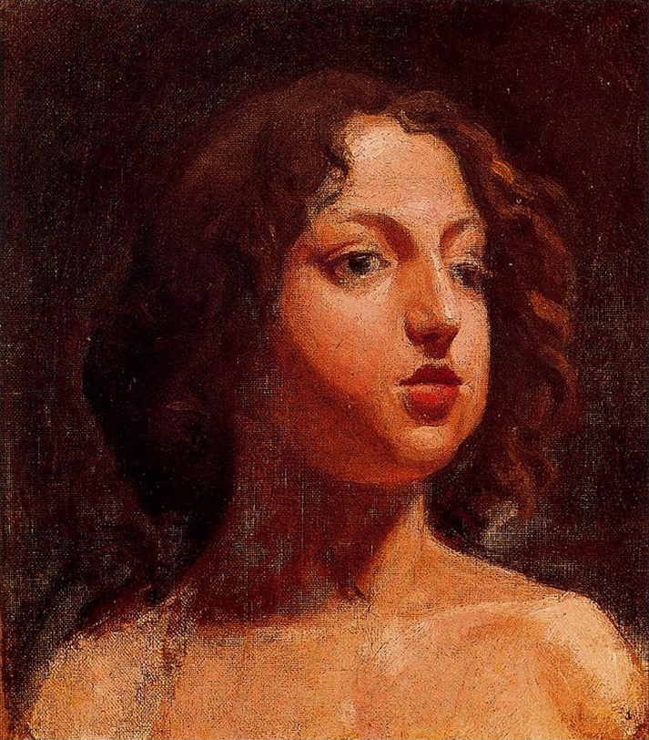
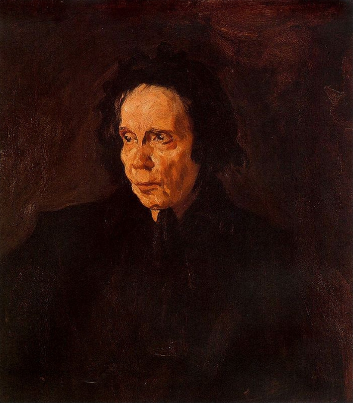
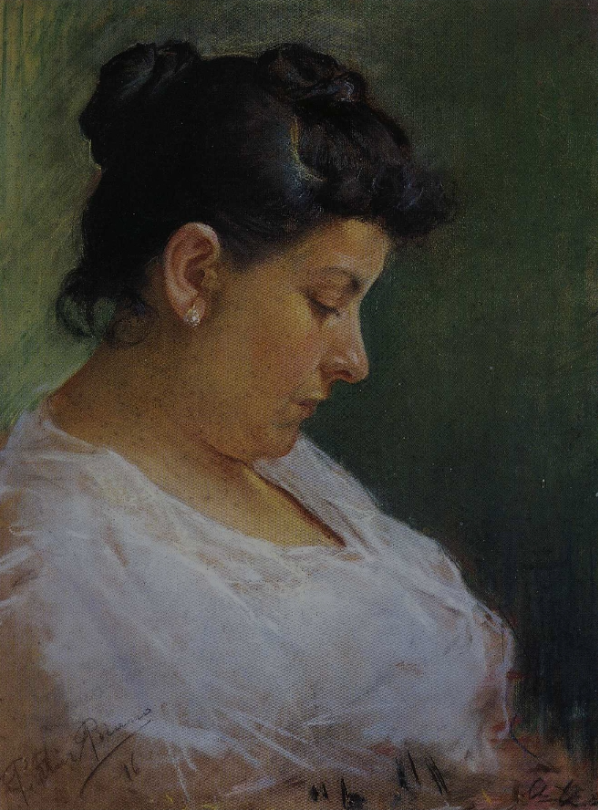
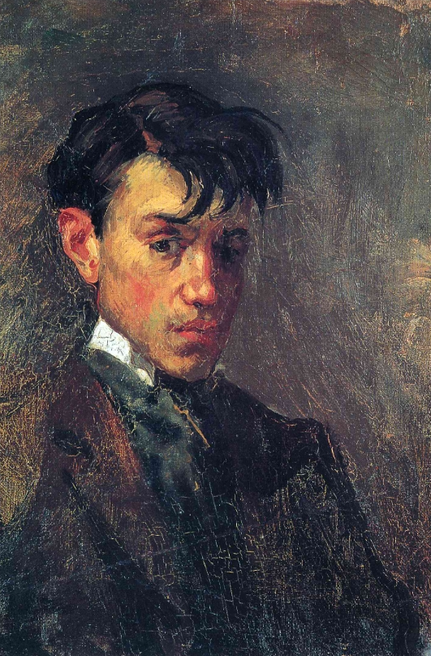
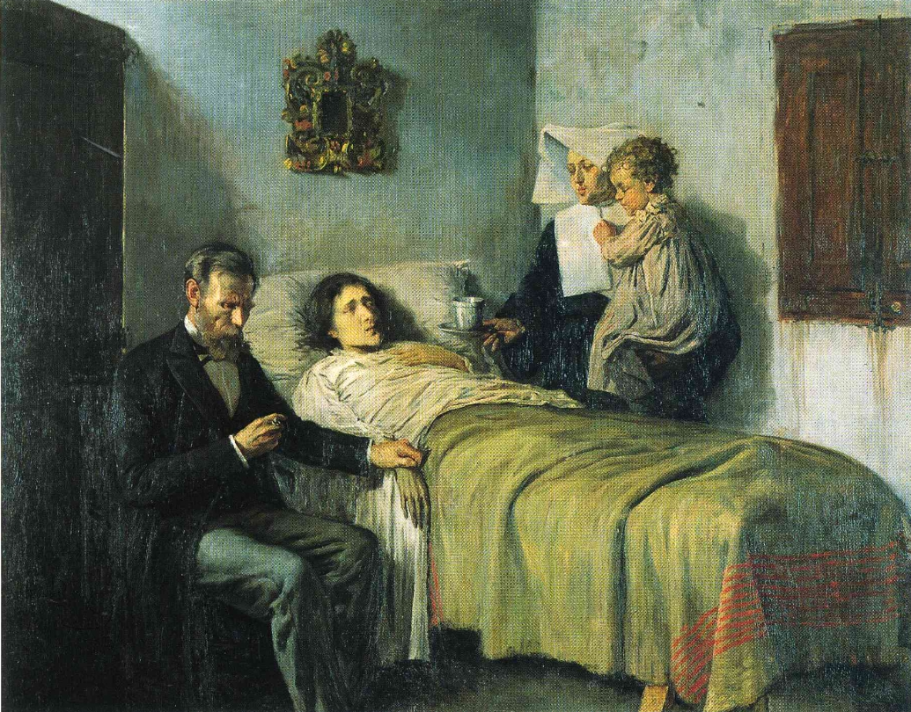
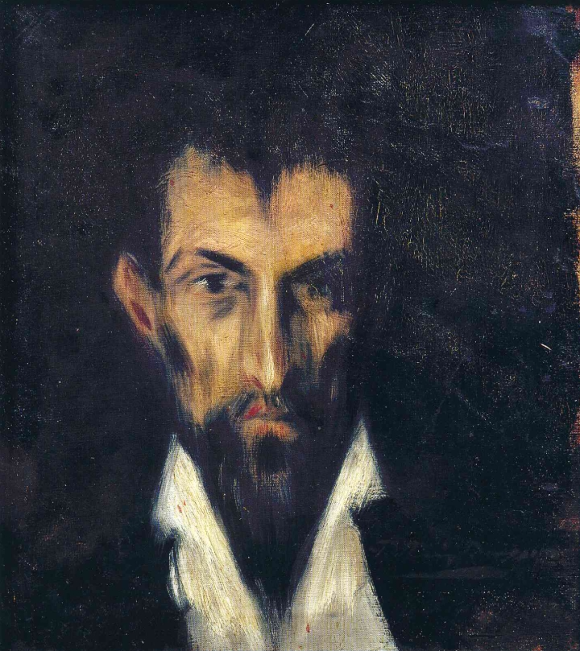
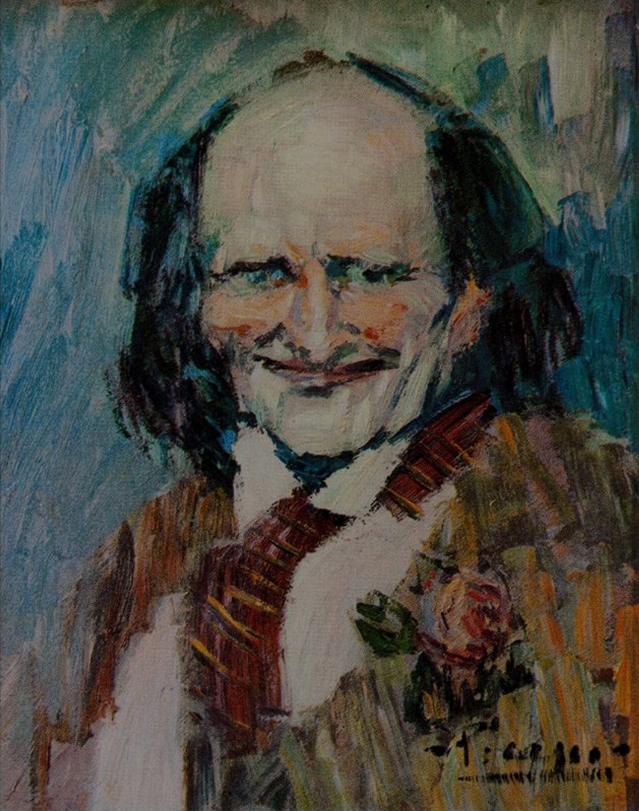
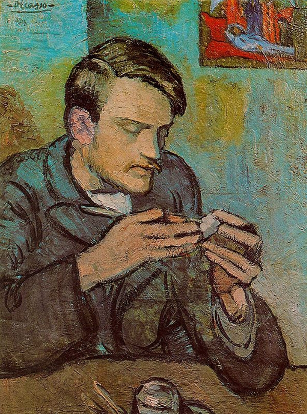
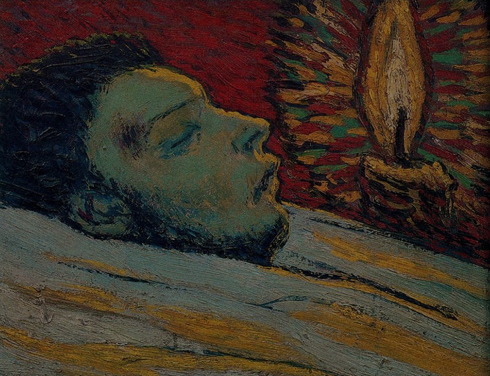

Ulises Lizardo Lopez Herrera | Carnet: 0900 - 26 - 53


3. Pablo Picasso (1881 – 1973)
Estilo y Movimiento: Cubismo, Vanguardismo (Enfoque en su Periodo Azul y obras de posguerra).
Si bien Picasso es mundialmente famoso por romper la perspectiva con el cubismo, su inclusión en esta selección celebra su capacidad para deconstruir el dolor. Especialmente durante su Periodo Azul, su paleta se tiñó de monocromos fríos para retratar la soledad, la pobreza y la desesperación. Más tarde, mediante la distorsión de las formas, logró canalizar la violencia de los conflictos bélicos y la fragmentación de la realidad moderna.
¿Por qué está en El Abismo?: Picasso nos enseña que la verdad de una forma no se encuentra en su simetría exterior, sino en la fuerza con la que es capaz de expresar el sufrimiento y la complejidad de la experiencia humana al ser desmantelada.









"Y conoceréis la verdad y la verdad os hará libres"